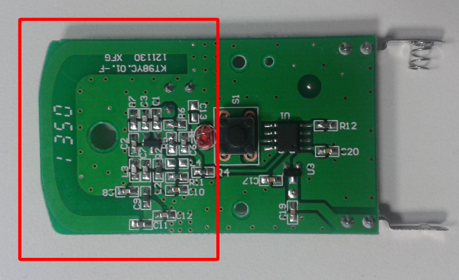
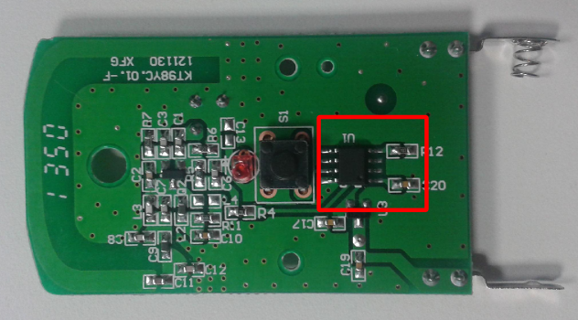
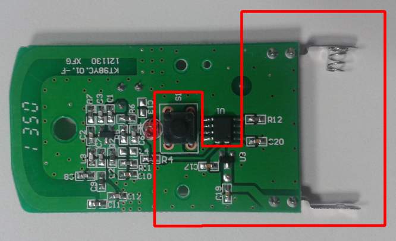
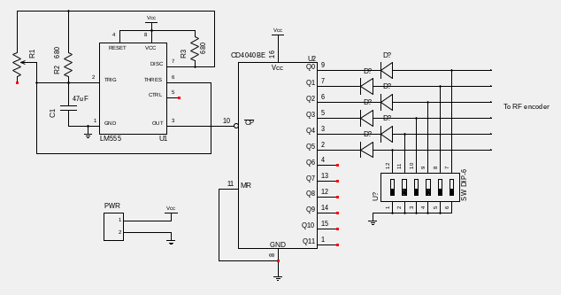

Hardware Hacking Workshop
Fun with RF Remotes
Who am I ?
- R&D Director @Sysdream
- Various security related fields:
- Reverse-engineering
- Electronics
- Lockpicking
- Coding
- Beer
Overview
- RF remotes 101
- Software Defined Radio
- Signal encoding
- Reversing/repurposing a basic remote
- How to mod your remote
- Tests & results
RF Remotes 101
RF remotes 101
- Radio Frequency remotes are everywhere
- Garage door opening systems
- Wireless doorbells and chimes
- Home alarm systems
- Baby monitoring systems
Radio gaga
- Radio-based communication devices
- Usually 433 MHz or 868 MHz baseband
- Poor encryption used (if any)
- Implement some kind of digital code
- Can be sniffed with cheap HW
RF systems principle
- Usually microswitches allow code setup,
- which is encoded before to be sent to
- a power stage dealing with RF.
Remote phone home
- Two types of RF remotes:
- Remotes using static code
- Remotes using dynamic code (a.k.a. rolling codes)
Remote teardown
- RF remote is usually composed of
- an emitter stage, using a defined baseband
- a control stage, sending a specific signal
- a power source, usually 12V or 3V for emitter
Remote teardown
Sample emitter stage
Remote teardown
Microcontroller (control stage)
Remote teardown
Power source
Power saving
To save power, remotes are usually active only when a button is pressed.
Software Defined Radio
SDR Basics
- SDR allows:
- Easy RF sniffing (<=1 GHz)
- Transmit various RF signals
- Using gnuradio-enable software
- Python scripting
SDR Devices
- RTL2832 based devices (USB TNT Tuner, RX only)
- HackRF (RX/TX half-duplex)
- BladeRF (RX/TX full-duplex)
Pros & Cons
- Pros
- Software only, easy to develop/adapt
- Handles RX/TX (mostly)
- Scriptable
- Cons
- Costs around 300-400 USD
- Needs specific knowledge (signal processing)
- You have to develop dedicated tools by yourself
Capturing radio signals
- Can be performed with a popular USB TV-Tuner (RTL2832)
- GQRX makes it easy to scan, detect and capture AM/FM modulated signals
- Can be saved as WAV files, for further analysis*
- Audacity helps a lot (visualization/decoding)
Practice Time !
1. Detecting our signal
With the help of GQRX, we scan the available frequencies, looking for a matching signal around 433.92 MHz.
2. Tuning the receiver
Some adjustments are made to GQRX:
- AM modulation is selected
- Adaptative gain is set to ON
- Frequency is adjusted to fit the one detected
- Audio gain is adjusted
3. Capturing the signal
Press the REC button in the bottom-right corner of the UI (demodulator). A WAV file is created,
named gqrx-TIMESTAMP.wav
4. Visualization
Captured signal is viewed with Audacity.
Signal encoding
(and decoding)
Many ways to encode a signal
- Different modulation schemes: amplitude (AM) and frequency (FM)
- Analog or digital signal
- Clear or encrypted
Basic AM encodings
- OOK: On/Off Keying
- ASK: Amplitude Shift Keying
- PWM: Pulse Width Modulation
- PPM: Pulse Phase Modulation
Identifying our signal encoding
- What does the signal look like ?
- What information may be encoded ?
- How much information is encoded ?
Our remote encoding scheme
- OOK is used (very common when dealing with RF remotes)
- PWM is used
Reversing a basic remote
Electronic overview
A RF remote is basically composed of:
- A power source
- A RF emitter stage
- A control stage (dealing with the encoding)
Information sent
- Information sent is encoded with microswitches and tactile switches
- It defines a serie of bits composing a binary code
- Both the remote and the receiver know the code
- This code is encoded and sent over the air
- The receiver decodes it, and take action
Encoding stage
Encoding is usually performed by:
- Dedicated chips, such as HT12E (Holtek)
- Microcontrollers (means some kind of firmware)
- Passive electronics components (simple signal)
Wait, can we turn this remote into something fun ?
(and for profit ?)
Possible mods/hacks
- Cheap 433 MHz jammer
- Shared code bruteforcer
433MHz Jammer
- Easy hack: only requires some wires
- Jamming is performed by keeping sending "ones" (due to OOK)
- May be improved, works better with noise generation.
Shared code bruteforcer
- Hardware bruteforcer
- Simpler than micro-controllers
- Requires an extra PCB
How it works ?
- We need a clock, to generate ticks
- We also needs a binary counter, to enumerate "passwords"
Hardware bruteforcer

Bruteforcer design
- NE555 is wired as an oscillator with a frequency of ~15 Hz
- NE555 feeds a CD4040BE (binary counter)
- Diodes simulate the switch state: floating if counter bit is set, connected to ground otherwise.
Frequency matters !
The 15 Hz frequency was not chosen randomly: it allows the RF remote to send at least the encoded code twice, in order to optimize the bruteforce attack.
How to mod your remote
Bill of materials
- 1 x Wireless chime
- 1 x RF Remote PCB
- 2 x 680 ohms resistors
- 1 x 47uF polarized capacitor
- 6 x 1N4148 diodes
- 1 x NE555 (U1)
- 1 x CD4040BE (U2)
1. Solder the resistors

2. Solder the CD4040BE

3. Solder the NE555
4. Solder the capacitor

5. Solder the diodes (1/2)
- Cut the cathode, left 5mm clear.
- Add some solder on the microswitch contact.

6. Solder the diodes (2/2)
- Solder the diodes vertically, the 5mm leg on the microswitch pin
- You can use a pair of pliers to be more precise.

7. Solder the power wires (1/2)
- Solder a wire from (+) to the upper pin of the tactile switch.

8. Solder the power wires (2/2)
- Solder a wire from (-) to the ground.
Questions ?
and maybe answers =)